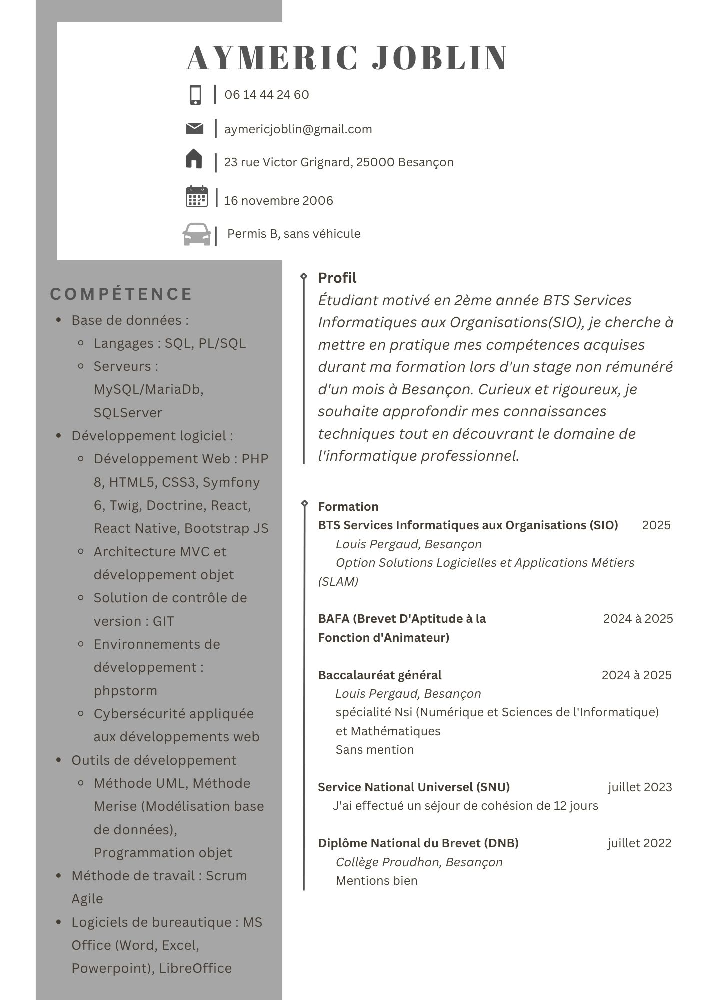
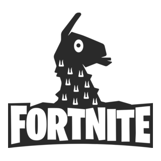
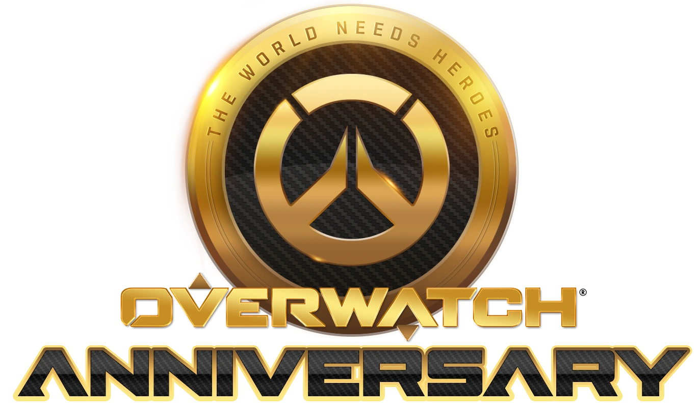

Courte présentation (très courte)
• 20 ans
• Étudiant en 2ème année de BTS SIO(Service Informatique aux Organisations)
• Option SLAM (Solution Logicielles et Applications Métiers)
Mon CV
Cliquez sur l'image pour ouvrir le CV en plein écran (il est composé de 2 pages) :

Brevet
J'ai obtenu mon Brevet avec mention Bien en 06/2022
Baccalauréat
J'ai obtenu mon Baccalauréat sans mention avec les spécialité Maths et Nsi (Numérique et Sciences de l'Informatique) en 06/2025
BAFA
J'ai obtenu mon BAFA lors de la commission du 04/12/2025
MOOC :
-

- Module 1 : Le RGPD et ses notions clés
- Module 2 : Les principe de la protection des données
- Module 3 : Les responsabilités des acteurs
- Module 4 : Le DPO et les outils de la conformité
- Module 5 : Les collectivités territoriales
- Module 6 : Travail et données personnelles
-

-

-

SNU

Mes Projets


Ma veille technologique
Aucune veille technologique pour le moment.
Mes experiences professionnelles
Je suis aussi animateur au centre de loisir de la MJC de Palente pendant les vacances scolaires.


Mes stages

Mes Passions sont
-
Les jeux vidéos
- La licence Pokémon
- Mon premier jeu Pokemon :
Pokemon Noire

- Mon jeu Pokemon préféré :
Pokemon Rubis Oméga et Saphir Alpha

- Mon Pokémon préféré
Rayquaza

- Mon premier jeu Pokemon :
- Fortnite

- Overwatch

Mes personnages préférés :
- Faucheur

- Kiriko

- Faucheur
-
Les animés et les mangas
- Sword Art Online (SAO)

- L'Attaque des Titan (SNK)

- Naruto

- 86 (Eighty-six)

J'ai commencé à rentrer dans le monde des jeux vidéos suite à ma découverte de Pokemon Noire.
C'est bien plus tard, que j'ai découvert les jeux en ligne comme Overwatch 2 et Fortnite.
J'avais une vague connaissance des grands animes connus comme Dragon Ball et Naruto.
Et un jour, à la télé, j'ai vu Naruto et j'ai tout de suite accrocher à ce type d'oeuvre.
Suite à ça, j'ai regardé des centaines d'animes comme Sword Art Online, L'Attaque des Titan, Naruto,
Eighty-six, etc.